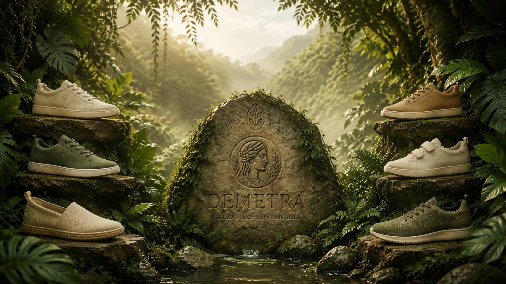
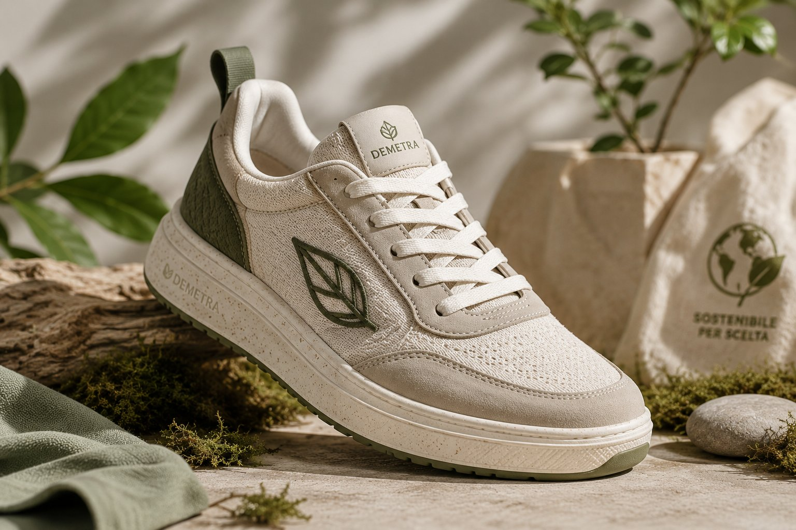

Materiali organici
Materie prime di origine naturale per calzature più responsabili e vicine alla natura.

Una nuova idea di calzatura che unisce estetica, comfort e attenzione concreta all'ambiente.

Materiali organici e processi innovativi.
Materie prime di origine naturale per calzature più responsabili e vicine alla natura.
Ogni processo riduce sprechi, impatto ambientale e consumo di risorse al minimo.
Linee essenziali, leggerezza e vestibilità per ogni passo, ogni giorno.
Stile e responsabilità che camminano insieme verso un futuro più verde.
Dopo anni trascorsi nel mondo del fast fashion, è nata una domanda sempre più forte: che prezzo sta pagando il pianeta per tutta questa velocità?
Da questa consapevolezza prende forma Demetra — un progetto che vuole trasformare il modo di pensare la calzatura, unendo design, qualità e sostenibilità in ogni singolo paio.
Ispirare un cambiamento autentico attraverso una moda più consapevole.
Calzature curate nei dettagli, pensate per durare nel tempo.
Soluzioni nuove che valorizzino materiali organici e di recupero.
Ridurre l'impronta ambientale senza rinunciare al comfort.
Le calzature Demetra sono realizzate con materiali di origine organica, anche ottenuti attraverso processi innovativi come la bio-polimerizzazione della vinaccia — trasformando gli scarti in nuove risorse.
Ogni scelta produttiva è ripensata per ridurre l'impatto e promuovere una filiera più attenta, responsabile e trasparente.
Impegno concreto verso il bene comune e il valore condiviso.
Un modello d'impresa orientato a sostenibilità, etica e trasparenza.
Standard riconosciuti per materiali e filiere più responsabili.
Urban è la collezione pensata per chi vive la città senza compromessi: versatile, essenziale, comoda e rispettosa dell'ambiente. Ogni modello nasce da un equilibrio tra forma e responsabilità.
Scopri in anteprimaUna calzatura può essere bella, comoda e responsabile. Demetra nasce per dimostrarlo.
Contattaci ora